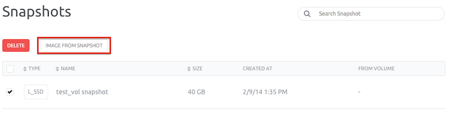
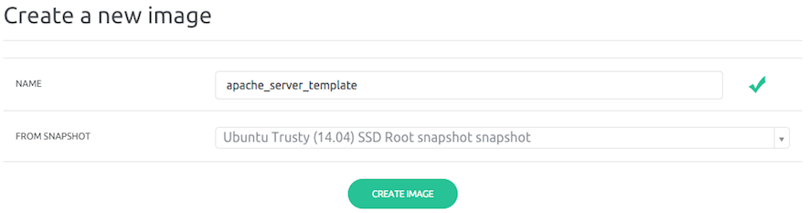
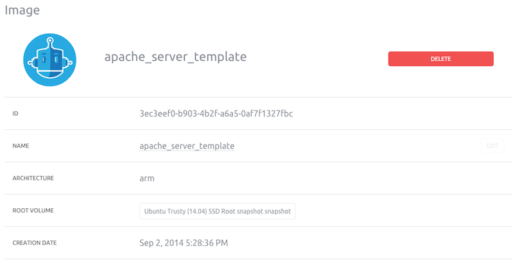

This page shows how to create an image from a C1 server and create a new server from this image.
Requirements
- You have an account and are logged into cloud.scaleway.com
- Your SSH key is configured
- You have a running server
- You have installed packages and made the configuration you need on your server
- You have created a snapshot of the volume you want to be an image
Images allow you to create series of servers with predefined configuration.
For instance, you can prepare to scale your serving capacity with a frontend image for an Apache server.
Some potential uses:
There are three steps to create an Image:
There are three steps to create a server from an Image
There are three steps to create a new server from an image:
In the Control Panel, click “Snapshot” in the compute section.
The page you land on contains the list of your snapshosts.

Select the snapshot to use to create an Image and click “Image from snapshot” button.
You are now asked to give a name to your Image.

Click the “Create Image” buttons, your Image is now ready to use.
In the Compute section of the console click “Images”. Your new Image should be present in the Images list.

In the previous steps, we created a new Image. We will create a new server based on the Image we previously created.
In the Control Panel, click the “Create Server” button.
You will land on the server-creation page where you must input basic information for your server.
In the Image section click the Images tab. Select the Image you created previously from the list below.
Click the “Create Server” button. This action starts your server. In a few seconds, your server will be ready to use.
The running server will be an exact copy of your Image.